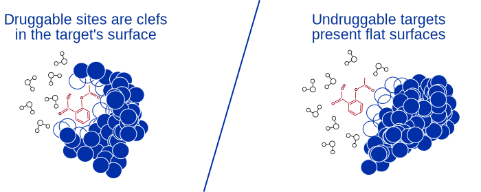

<section id="technology">
  <div class="container">
    <div class="row">
      <div class="col-xs-10 col-sm-10 col-md-10 col-lg-10 
                  col-xs-offset-1 col-sm-offset-1 col-md-offset-1 col-lg-offset-1 text-gray">
        <h2 class="section-headingr text-center">Technology</h2>
        <hr class="primary">
        <p> Of the hundreds of thousands of proteins in the human body, encoded by the twenty-thousand genes in the human genome, only 754 of them have ever been successfully targeted by FDA approved drugs.  </p>
        <p class="text-center"></p>

        <p> Druggable proteins are defined as those with deep clefts or pockets, into which you can insert a small molecule drug, displacing water.  Undruggable proteins, however, have shallow clefts or lack clefts entirely, which means that drugs that bind will do so in the presence of water - and the design process for molecules to disrupt their behaviour must take water into account.</p>

        <p class="text-center"></p>

        <p>Thus, in order to drug the undruggable, you need to be able to understand and predict the forces at work with higher accuracy than is currently possible with available tools.  It means understanding the interactions between not just between the drug and the target, but the drug and the solvent to which it is exposed, and to be able to predict - with high accuracy - how those interactions will play out.</p>

        <br>

        <h4>Focus on Accuracy</h4>
      
        <p>At HTuO, we believe the best way to make better drugs is to build tools that allow us to understand the interactions between drugs and proteins more accurately. That means investing the time and energy into getting it right - at every step.

<br><br>

Where other companies are designing ways to screen compounds faster (eg. Docking), we're looking for ways to make compounds better. To find the right drug, you need to know how to measure that fit accurately - and that's where we stand out.  </p>
 
        <p class="text-center"></p>  
 
        <br>

        <h4>Value of Accuracy</h4>

        <p>Our platform is based on improving the physics behind molecular interactions, stemming from our proprietary atomic models and custom force field.  By taking the time to get the details right, our platform will allow us to simulate many of the emergent properties of molecules. That means that, instead of searching ever-larger collections of drugs for those that might work, we can focus on optimizing existing targets to find new molecules that will bind even better - and to build a better suite of tools that will allow us to find the proverbial needles hiding in the haystack that our competitors will miss.

<br><br>

Understanding binding accurately from the start will mean spending less time optimizing candidate molecules, and less money testing them in the lab. It also means we can unlock binding on surfaces that would otherwise be impossible with lower accuracy tools - making it possible to target key proteins that others would consider undruggable.</p>
   
        <p class="text-center"></p>  

        <br>

        <h4>Now is the Time</h4>

        <p>Nearly all existing force field descriptions of interactions between atoms descend from models that were initially designed in the 1970's and 1980s, where the physics was over-simplified to run on contemporary computers. With current computer chips running over 100,000x times faster, we now have the computational power to focus on accuracy, and not just on speed.</p>

        <br>

        <h4>Demonstration</h4> 

        <p>The demonstration simulation below, run entirely in our prototype software, shows a glimpse of what we're working on.  Where most systems are unable to represent changing pH, or break bonds, ours seamlessly bakes it into the core technology.

<br><br>

Our company's name is derived from the importance of understanding water, as nearly all things in the realm of biology happen in water solutions.  Here, we demonstrate what happens when we simulate an acid and a base in water - and the subsequent interactions that take place.</p>

        <div class="embed-responsive embed-responsive-16by9">
          <iframe class="embed-responsive-item"
                  src="https://www.youtube.com/embed/DFJOEUoz7SA" 
                  title="" frameborder="0" allow="accelerometer; autoplay; clipboard-write;
                  encrypted-media; gyroscope; picture-in-picture" allowfullscreen>
          </iframe>
        </div>
      </div>
    </div>
  </div>
</section>
